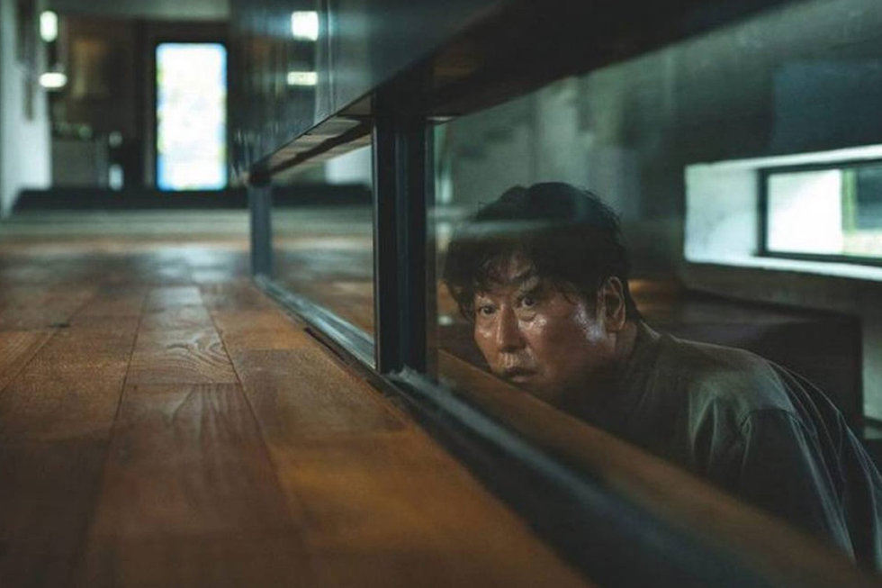
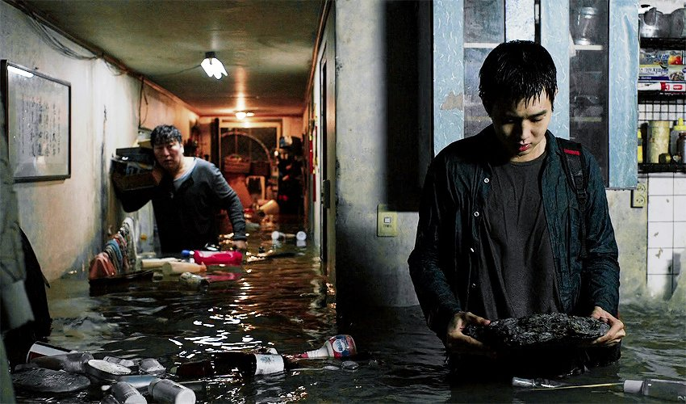

Parasite
A city divided by height
Film still from Parasite (Bong Joon-ho, 2019), reproduced by Aju Business Daily for discussion of semi-basement housing.
Two homes, two versions of Seoul
The Parks live in a spacious house on higher ground, while the Kims occupy a semi-basement with a street-level window. The difference is not only size. The Park home offers sunlight, privacy and a sheltered garden; the Kims see rubbish and drunk passers-by outside. They belong to Seoul, but occupy a part others prefer not to notice.

Going up does not mean moving up
The Kims walk uphill to the Park house and descend many stairs on their way home. They can enter a wealthy space and perform middle-class roles, but never control it. Their downward journey turns class into physical movement.
Access to a rich home is temporary; the journey home restores the class boundary.

One storm, unequal consequences
For the Parks, the rain is an inconvenience followed by clear weather and an outdoor party. For the Kims, it floods their home, destroys their possessions and forces them into a public shelter. Housing and infrastructure make the same storm comfortable for one family and disastrous for another.